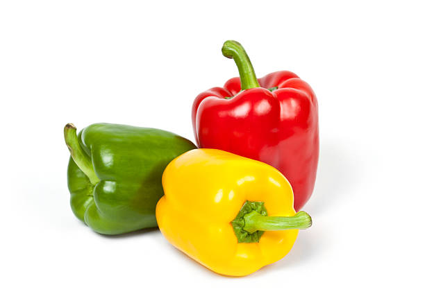

La comida china en general es una de mis preferidas desde la infancia,
siempre suelo preparar muchos de estos platos asiáticos en casa, nos encantan!!
entre los platos que más me gustan están sus famosos rollitos de primavera,
su exquisito pan chino o unos buenos tallarines! y en cuanto a platos principales,
me encanta el pollo agridulce y el chopsuey! y por supuesto nunca puede faltar el plato de arroz!!
Ingredientes para preparar Arroz chino
2 Tazas de arroz blanco previamente cocido
1 Pechuga de pollo picada en cubos (si no tienes pollo puedes utilizar carne o cerdo)
1 Pechuga de pollo picada en cubos (si no tienes pollo puedes utilizar carne o cerdo)
250 gr. de Jamón troceado en cubos pequeños
1/2 Pimiento rojo cortado en cuadros pequeños 
Cómo hacer Arroz chino
Comenzamos la elaboración de nuestro arroz chino, para ello, en un wok bien caliente agregamos el aceite vegetal y el aceite de sésamo,
incorporamos el pollo en cubos y en lo que esté cocinado, lo retiramos del wok y lo reservamos.
Comenzamos la elaboración de nuestro arroz chino, para ello, en un wok bien caliente agregamos el aceite vegetal y el aceite de sésamo,
incorporamos el pollo en cubos y en lo que esté cocinado, lo retiramos del wok y lo reservamos.
Incorporamos los langostinos y dejamos cocinar por 2 minutos, luego agregamos el pollo que teníamos reservado, el jamón, el huevo y removemos muy bien.
Agregamos el arroz e integramos junto al resto de ingredientes, luego agregamos la salsa de soja oscura y seguimos removiendo hasta que el arroz tome un color uniforme,
finalmente agregamos el ajete (o cebollin chino) removemos y apartamos del fuego, servimos y ya tenemos listo nuestro rico arroz chino!! que aproveche!!